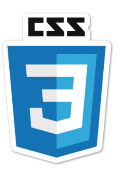

Habilidades

HTML

CSS
JavaScript
Git
Me chamo Natalia Aparecida de Souza Ribeiro, tenho 37 anos, sou estudante de Engenharia de Software na Faculdade Estácio. Trabalho na Alstom desde 2023, no setor CBS, e estou em transição de carreira para tecnologia. Sou apaixonada por desenvolvimento, aprendizado contínuo e busco me aprimorar diariamente através de plataformas como DIO, Coursera e Duolingo. Determinada, proativa e focada, meu objetivo é construir uma carreira sólida em tecnologia.
HTML
CSS
JavaScript
Git
Site pessoal desenvolvido com HTML, CSS e JavaScript, onde apresento minha trajetória, habilidades e projetos.
Projeto de uma calculadora funcional feita para treinar operações matemáticas utilizando JavaScript.
Site desenvolvido para um restaurante fictício, com layout responsivo, menus e formulário de contato.
"Natalia é uma profissional dedicada, sempre comprometida com a entrega de qualidade."
"Trabalhar com Natalia é ter certeza de que os desafios serão superados com determinação."
"Sua proatividade e vontade de aprender fazem dela uma profissional diferenciada."